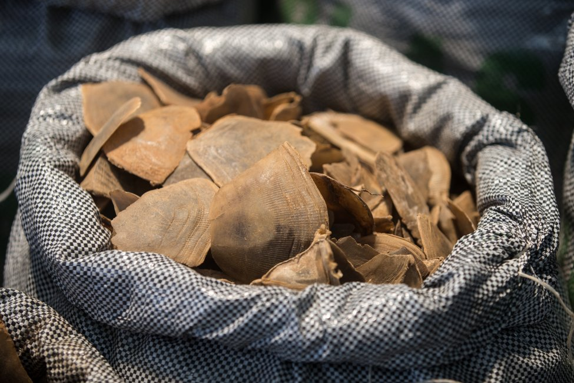
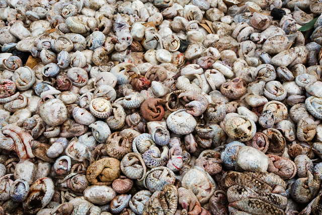
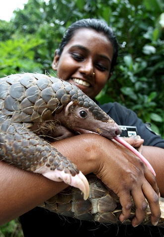

The Giant pangolin (Smutsia gigantea) is the largest member of the pangolin family, the most trafficked animal on the planet. In Eastern Asia pangolin scales are thought to be medicinal despite their effectless reality. Still, pangolins are killed en masse or sold in underground markets as if they were narcotics. It is estimated over 1 million pangolins have been brutally murdered in the last 10 years for their “health benefits”. The outcome of these actions is critical endangerment of some of the creatures, leading to extinction if we don’t act soon...
As shown above, there are rather few other members of the pangolin family. These being the Asian pangolins and the African ones, which the Giant pangolin is a part of. Displayed above, the Manidae family split around 38 million
years ago, thus placing any evolution within the Cenozoic era. The subgenus Smutsia only started to diverge around 10 million years ago, rendering it a rather modern species in terms of evolutionary history. Some of the pangolin’s most distant
evolutionary relatives include animals like the tiger, wolf or even the giant panda. Some of these connections are easy enough to see like the quadrupedal nature or the long tails, however 80 million years of evolutionary separation pulled
these species apart.
Fortunately there were not many evolutionary hurdles the pangolin had to overcome. Very few predators attack the pangolin due to its nature to curl into a protective ball. This trait likely evolved from the need
to protect itself
from lions or hyenas that attempted to attack it. As well, when these creatures curl up, their scales become spikes to harm the predators that try to harm it. These few evolutionary obstacles highlight the importance of maintaining the species
at its best.
Currently, the Giant pangolin is fighting the battle to stay alive. The species inhabits Central Africa in diminishing numbers. While many have tried to keep pangolins in captivity, their lifespan usually reaches a maximum of 4 years, far below the average lifespan of the animal. The species is both solitary and nocturnal making it next to impossible to determine their population size however it is no secret that it decreases every passing day. The largest threats to the species are deforestation and humans. Humans are the biggest contributors to the endangerment of the species, poaching and hunting the animals for meat or personal gain such as skin or scales for medicinal purposes. While the pangolin has very few natural predators, humans are the number one peril towards the future of the species. Often large masses of pangolins, dead or alive, are kept together for humans to shave off the scales. This is the reason why a pangolin might be white in colour, because it has been stripped of its natural protection and left to die. The unfortunate fate of the species is found in the fact that these animals are burnt and killed to perpetuate outdated, faulty medicinal practices. The high demand of the animals parts in countries like China or Thailand continues the torture of the innocent creatures and further endangers the already damaged species.
This is a bag of pangolin scales
This is a pile of 2.6 thousand pangolin carcasses, harvested of their scales
Thankfully, however, there are many plans in place to help the pangolins before it’s too late. Of these plans, the Giant Pangolin Species Survival Plan by Kaitlyn Bogacz, et al. was written to improve chances of survival for the species. According to the plan, countries where the Giant pangolin inhabits are being required to heavily enforce their laws and follow rigid and complete regulations and the total recognition of said regulations. As well via legal penalties and fines, the poaching will hopefully dwindle with time. Similarly, programs intend to increase research on the species to understand proper living conditions if said species needs to join captivity. The majority of pangolin meat is being sold on the black market in communities, thus by increasing the opportunities for food in these communities, the goal would be to eliminate the need for this. With all of these ideas combined, the only hope is that the species can be saved and will carry on millions of years into the future.
While the species may have a survival plan in place, there are many things that we can all do to help the species out. This may include donating money to a fund that needs it, but there are many other ways that you can help. You can take the World Wildlife Foundation’s Pledge to help or report any illegal sales you might see online. But overall, the best way to help is simply informing others, family members, friends, teachers, anyone. The less that people talk about the issue, the more it is able to be swept under the rug. By simply telling others, you are enabling a chain of knowledge that will simply open the eyes of others to problems they may not even know exist.